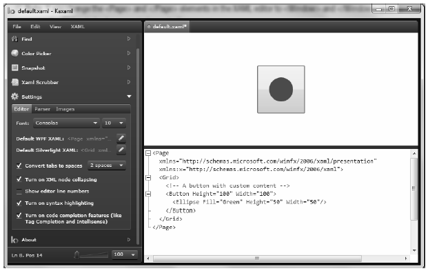
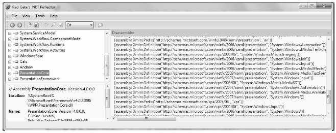
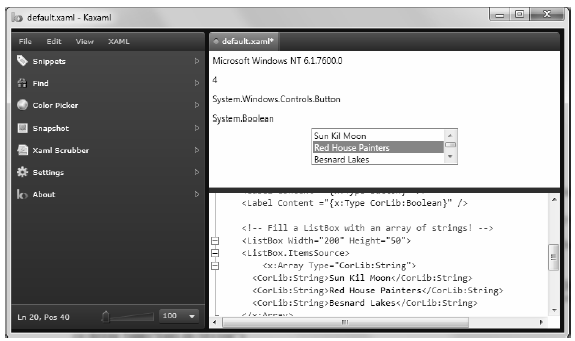

Production level WPF applications will typically make use of dedicated tools to generate the necessary XAML. As helpful as these tools are, it is a very good idea to have an understanding of the overall structure of XAML markup.
When you are first learning the grammar of XAML, it can be very helpful to use a free tool named kaxaml. You can obtain this popular WPF XAML editor/parser from the following web site:
http://www.kaxaml.com<
Kaxaml is helpful in that it has no clue about C# source code, event handlers or implementation logic and is a much more straightforward way to test XAML snippets than using a full-blown Visual Studio 2010 WPF project template. As well, kaxaml has a number of integrated tools, such as a color chooser, XAML snippet manager, and even a "XAML scrubber" option that will format your XAML based on your settings.
When you first open kaxaml, you will find simple markup for a <Page> control:
<Page xmlns="http://schemas.microsoft.com/winfx/2006/xaml/presentation" xmlns:x="http://schemas.microsoft.com/winfx/2006/xaml"> <Grid> <!-- Add your XAML here! --> </Grid> </Page>
Like a Window, a Page contains various layout managers and controls. However, unlike a Window, Page objects cannot run as standalone entities. Rather, they must be placed inside of a suitable host such as a NavigationWindow, Frame or a web browser (and in that case, you have just made an XBAP!). The good news is that you can type identical markup within a <Page> or <Window> scope.
Note If you change the <Page> and </Page> elements in the kaxaml markup window to <Window> and </Window>, you can press the F5 key to load a new window onto the screen.
As an initial test, enter the following markup into the XAML pane at the bottom of the tool:
<Page xmlns="http://schemas.microsoft.com/winfx/2006/xaml/presentation" xmlns:x="http://schemas.microsoft.com/winfx/2006/xaml"> <Grid> <!-- A button with custom content --> <Button Height="100" Width="100"> <Ellipse Fill="Green" Height="50" Width="50"/> </Button> </Grid> </Page>
You should now see your page render at the upper part of the kaxaml editor (Figure 27-13).
Figure 27-13 Kaxaml is a very helpful (and free) tool used to learn the grammar of XAML
As you work with kaxaml, remember that this tool does not allow you to author any markup that entails code compilation (however, using x:Name is allowed). This includes defining a x:Class attribute (for specifying a code file), entering event handler names in markup, or using any XAML keywords that also entail code compilation (such as FieldModifier or ClassModifier). Any attempt to do so will result in a markup error.
The root element of a WPF XAML document (such as a <Window>, <Page>, <> or <Application> definition) will almost always make reference to two predefined XML namespaces:
<Page xmlns="http://schemas.microsoft.com/winfx/2006/xaml/presentation" xmlns:x="http://schemas.microsoft.com/winfx/2006/xaml"> <Grid> </Grid> </Page>
The first XML namespace, http://schemas.microsoft.com/winfx/2006/xaml/presentation, maps a slew of WPF .NET namespaces for use by the current *.xaml file (System.Windows, System.Windows.Controls, System.Windows.Data, System.Windows.Ink, System.Windows.Media, System.Windows.Navigation, etc.).
This one-to-many mapping is actually hard-coded within the WPF assemblies (WindowsBase.dll, PresentationCore.dll, and PresentationFramework.dll) using the assembly-level [XmlnsDefinition] attribute. Here is one such listing, which essentially imports System.Windows:
[assembly: XmlnsDefinition("http://schemas.microsoft.com/winfx/2006/xaml/presentation",
"System.Windows")]
If you load these WPF assemblies into reflector.exe, you can view these mappings firsthand. For example, if you select the PresentationCore.dll assembly (see Figure 27-14), and press the Space key, you will see numerous instances of the [XmlnsDefinition] attribute.
Figure 27-14 The http://schemas.microsoft.com/winfx/2006/xaml/presentation namespace maps to the core WPF namespaces
The second XML namespace, http://schemas.microsoft.com/winfx/2006/xaml, is used to include XAML-specific "keywords" (for lack of a better term) as well as the inclusion of the System.Windows.Markup namespace:
[assembly: XmlnsDefinition("http://schemas.microsoft.com/winfx/2006/xaml", "System.Windows.Markup")]
One rule of any well-formed XML document (remember, XAML is an XML-based grammar) is that the opening root element designates one XML namespace as the primary namespace, which typically is the namespace that contains the most commonly used items. If a root element requires the inclusion of additional secondary namespaces (as seen here), they must be defined using a unique tag prefix (to resolve any possible name clashes). As a convention, the prefix is simply x; however, this can be any unique token you require, such as XamlSpecificStuff:
<Page xmlns="http://schemas.microsoft.com/winfx/2006/xaml/presentation" xmlns:XamlSpecificStuff="http://schemas.microsoft.com/winfx/2006/xaml"> <Grid> <!-- A button with custom content --> <Button XamlSpecificStuff:Name="button1" Height="100" Width="100"> <Ellipse Fill="Green" Height="50" Width="50"/> </Button> </Grid> </Page>
The obvious downside of defining wordy XML namespace prefixes is you would be required to type XamlSpecificStuff each time your XAML file needs to refer to one of the items defined within this XAML-centric XML namespace . Given that XamlSpecificStuff requires many additional keystrokes, just stick with x.
In any case, beyond the x:Name, x:Class and x:Code keywords, the http://schemas.microsoft.com/winfx/2006/xaml XML namespace also provides access to additional XAML keywords, the most common of which are shown in Table 27-9.
Table 27-9. XAML Keywords
| XAML Keyword | Meaning in Life |
|---|---|
| x:Array | Represents a .NET array type in XAML. |
| x:ClassModifier | Allows you to define the visibility of the C# class (internal or public) denoted by the Class keyword. |
| x:FieldModifier | Allows you to define the visibility of a type member (internal, public, private, or protected) for any named subelement of the root (e.g., a <Button> within a <Window> element). A named element is defined using the Name XAML keyword. |
| x:Key | Allows you to establish a key value for an XAML item that will be placed into a dictionary element. |
| x:Name | Allows you to specify the generated C# name of a given XAML element. |
| x:Null | Represents a null reference. |
| x:Static | Allows you to make reference to a static member of a type. |
| x:Type | The XAML equivalent of the C# typeof operator (it will yield a System.Type based on the supplied name). |
| x:TypeArguments | Allows you to establish an element as a generic type with a specific type parameter (e.g., List<int> vs. List<bool>). |
In addition to these two necessary XML namespace declarations, it is possible, and sometimes necessary, to define additional tag prefixes in the opening element of a XAML document. You will typically do so whenever you need to describe in XAML a .NET class defined in an external assembly. For example, say you have built a few custom WPF controls and packaged them in a library named MyControls.dll.
Now, if you wish to create a new Window that uses these controls, you can establish a custom XML namespace that maps to your library using the clr-namespace and assembly tokens. Here is some example markup that creates a tag prefix named myCtrls, which can be used to access members in your library:
<Window x:Class="WpfApplication1.MainWindow" xmlns="http://schemas.microsoft.com/winfx/2006/xaml/presentation" xmlns:x="http://schemas.microsoft.com/winfx/2006/xaml" xmlns:myCtrls="clr-namespace:MyControls;assembly=MyControls" Title="MainWindow" Height="350" Width="525"> <Grid> <myCtrls:MyCustomControl /> </Grid> </Window>
The clr-namespace token is assigned to the name of the .NET namespace in the assembly, while the assembly token is set to the friendly name of the external *.dll assembly. You can use this syntax for any external .NET library you wish to manipulate in markup.
You will see many of these keywords in action where required in the chapters to come; however, by way of a simple example, consider the following XAML <Window> definition that makes use of the ClassModifier and FieldModifier keywords as well as x:Name and x:Class (remember that kaxaml.exe will not allow you to make use of any XAML keyword that entails code compilation, such as x:Code, x:FieldModifier, or x:ClassModifier):
<!-- This class will now be declared internal in the *.g.cs file --> <Window x:Class="MyWPFApp.MainWindow" x:ClassModifier ="internal" xmlns="http://schemas.microsoft.com/winfx/2006/xaml/presentation" xmlns:x="http://schemas.microsoft.com/winfx/2006/xaml"> <!-- This button will be public in the *.g.cs file --> <Button x:Name ="myButton" x:FieldModifier ="public" Content = "OK"/> </Window>
By default, all C#/XAML type definitions are public, while members default to internal. However, based on your XAML definition, the resulting autogenerated file contains an internal class type with a public Button tButton type:
internal partial class MainWindow : System.Windows.Window, System.Windows.Markup.IComponentConnector { public System.Windows.Controls.Button myButton; ... }Once you have established your root element and any required XML namespaces, your next task is to populate the root with a child element. In a real-world WPF application, the child will be a layout manager (such as a Grid or StackPanel) which contains, in turn, any number of additional UI elements that describe the user interface. The next chapter examines these layout managers in detail, so for now just assume that your <Window> type will contain a single Button element.
As you have already seen over the course of this chapter, XAML elements map to a class or structure type within a given .NET namespace, while the attributes within the opening element tag map to properties or events of the type.
To illustrate, enter the following <Button> definition into kaxaml:
<Page xmlns="http://schemas.microsoft.com/winfx/2006/xaml/presentation" xmlns:x="http://schemas.microsoft.com/winfx/2006/xaml"> <Grid> <!-- Configure the look and feel of a Button --> <Button Height="50" Width="100" Content="OK!" FontSize="20" Background="Green" Foreground="Yellow"/> </Grid> </Page>
Notice that the values assigned to each property have been captured as a simple text value. This may seem like a complete mismatch of data types because if you were to make this Button in C# code, you would not assign string objects to these properties but would make use of specific data types. For example, here is the same button authored in code:
public void MakeAButton() { Button myBtn = new Button(); myBtn.Height = 50; myBtn.Width = 100; myBtn.FontSize = 20; myBtn.Content = "OK!"; myBtn.Background = new SolidColorBrush(Colors.Green); myBtn.Foreground = new SolidColorBrush(Colors.Yellow); }
As it turns out, WPF ships with a number of type converter classes, which will be used to transform simple text values into the correct underlying data type. This process happens transparently (and automatically).
While this is all well and good, there will be many times when you need to assign a much more complex value to a XAML attribute, which cannot be captured as a simple string. For example, let's say you want to build a custom brush to set the Background property of the Button. If you are building the brush in code, it is quite straightforward:
public void MakeAButton() { ... // A fancy brush for the background. LinearGradientBrush fancyBruch = new LinearGradientBrush(Colors.DarkGreen, Colors.LightGreen, 45); myBtn.Background = fancyBruch; myBtn.Foreground = new SolidColorBrush(Colors.Yellow); }
How, however, can you represent your complex brush as a string? Well, you can't! Thankfully XAML provides a special syntax that can be used whenever you need to assign a property value to a complex object, termed property-element syntax.
Property-element syntax allows you to assign complex objects to a property. Here is an XAML description for a Button that makes use of a LinearGradientBrush to set its Background property:
<Button Height="50" Width="100" Content="OK!" FontSize="20" Foreground="Yellow"> <Button.Background> <LinearGradientBrush> <GradientStop Color="DarkGreen" Offset="0"/> <GradientStop Color="LightGreen" Offset="1"/> </LinearGradientBrush> </Button.Background> </Button>
Notice that within the scope of the <Button> and </Button> tags, you have defined a sub-scope named <Button.Background>. Within this scope, you have defined a custom <LinearGradientBrush>. (Don't worry about the exact code for the brush; you'll learn about WPF graphics in Chapter 30.)
Generally speaking, any property can be set using property-element syntax, that always breaks down to the following pattern:
<DefiningClass> <DefiningClass.PropertyOnDefiningClass> <!-- Value for Property here! --> </DefiningClass.PropertyOnDefiningClass> </DefiningClass>
While any property could be set using this syntax, if you can capture a value as a simple string, you will save yourself typing time. For example, here would be a much more verbose way to set the Width of your Button:
<Button Height="50" Content="OK!" FontSize="20" Foreground="Yellow"> ... <Button.Width> 100 </Button.Width> </Button>
In addition to property-element syntax, XAML defines a special syntax used to set a value to an attached property. Essentially, an attached property allows a child element to set the value for a property that is actually defined in a parent element. The general template to follow looks like this:
<ParentElement> <ChildElement ParentElement.PropertyOnParent = "Value"> </ParentElement>
The most common use of attached property syntax is to position UI elements within one of the WPF layout managers classes (Grid, DockPanel, etc.). The next chapter dives into these panels in some detail; for now, enter the following in kaxaml:
<Page xmlns="http://schemas.microsoft.com/winfx/2006/xaml/presentation" xmlns:x="http://schemas.microsoft.com/winfx/2006/xaml"> <Canvas Height="200" Width="200" Background="LightBlue"> <Ellipse Canvas.Top="40" Canvas.Left="40" Height="20" Width="20" Fill="DarkBlue"/> </Canvas> </Page>
Here, you have defined a Canvas layout manager that contains an Ellipse. Notice that the Ellipse is able to inform its parent (the Canvas) where to position its top/left position using attached property syntax.
There are a few items to be aware of regarding attached properties. First and foremost, this is not an all-purpose syntax that can be applied to any property of any parent. For example, the following XAML cannot be parsed without error:
<!-- Error! Set Background property on Canvas via attached property? --> <Canvas Height="200" Width="200"> <Ellipse Canvas.Background="LightBlue" Canvas.Top="40" Canvas.Left="90" Height="20" Width="20" Fill="DarkBlue"/> </Canvas>
In reality, attached properties are a specialized form of a WPF-specific concept termed a dependency property. Unless a property was implemented in a very specific manner, you cannot set its value using attached property syntax. You will explore dependency properties in a detail in Chapter 31.
Note Kaxaml, Visual Studio 2010, and Expression Blend all have IntelliSense, which will show you valid attached properties that can be set by a given element.
As explained, property values are most often represented using a simple string or via property-element syntax. There is, however, another way to specify the value of a XAML attribute, using markup extensions. Markup extensions allow a XAML parser to obtain the value for a property from a dedicated, external class. This can be very beneficial, given that some property values require a number of code statements to execute to figure out the value.
Markup extensions provide a way to cleanly extend the grammar of XAML with new functionality. A markup extension is represented internally as a class that derives from MarkupExtension. Note that the chances of your ever needing to build a custom markup extension will be slim to none. However, a subset of XAML keywords (such as x:Array, x:Null, x:Static, and x:Type) are markup extensions in disguise!
A markup extension is sandwiched between curly brackets, like so:
CODE GOES HERE
To see a markup extensions in action, author the following into kaxaml:
<Page xmlns="http://schemas.microsoft.com/winfx/2006/xaml/presentation" xmlns:x="http://schemas.microsoft.com/winfx/2006/xaml" xmlns:CorLib="clr-namespace:System;assembly=mscorlib"> <StackPanel> <!-- The Static markup extension lets us obtain a value from a static member of a class --> <Label Content ="{x:Static CorLib:Environment.OSVersion}"/> <Label Content ="{x:Static CorLib:Environment.ProcessorCount}"/> <!-- The Type markup extension is a XAML verion of the C# typeof operator --> <Label Content ="{x:Type Button}" /> <Label Content ="{x:Type CorLib:Boolean}" /> <!-- Fill a ListBox with an array of strings! --> <ListBox Width="200" Height="50"> <ListBox.ItemsSource> <x:Array Type="CorLib:String"> <CorLib:String>Sun Kil Moon</CorLib:String> <CorLib:String>Red House Painters</CorLib:String> <CorLib:String>Besnard Lakes</CorLib:String> </x:Array> </ListBox.ItemsSource> </ListBox> </StackPanel> </Page>
First of all, notice that the <Page> definition has a new XML namespace declaration, which allows you to gain access to the System namespace of mscorlib.dll. With this XML namespace established, you first make use of the x:Static markup extension and grab values from OSVersion and ProcessorCount of the System.Environment class.
The x:Type markup extension allows you to gain access to the metadata description of the specified item. Here, you are simply assigning the fully qualified names of the WPF Button and System.Boolean types.
The most interesting part of this markup is the ListBox. Here, you are setting the ItemsSource property to an array of strings declared entirely in markup! Notice how the x:Array markup extension allows you to specify a set of sub-items within its scope:
<x:Array Type="CorLib:String"> <CorLib:String>Sun Kil Moon</CorLib:String> <CorLib:String>Red House Painters</CorLib:String> <CorLib:String>Besnard Lakes</CorLib:String> </x:Array>
Note The previous XAML example is only used to illustrate a markup extension in action. As you will see in Chapter 28, there are much easier ways to populate ListBox controls!
Figure 27-15 shows the mark up of this <Page> in kaxaml.
Figure 27-15 Markup extensions allow you to set values via the functionality of a dedicated class
So! At this point, you have seen numerous examples that showcase each of the core aspects of XAML syntax. As you might agree, XAML is very interesting in that it allows you to describe a tree of .NET objects in a declarative manner. While this is extremely helpful when configuring graphical user interfaces, do remember that XAML can describe any type from any assembly provided it is a nonabstract type containing a default constructor.